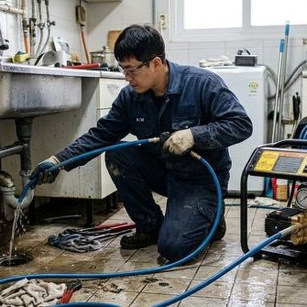
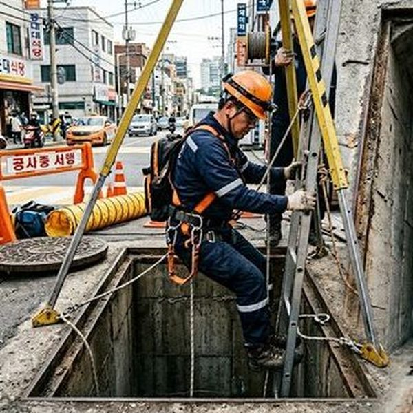
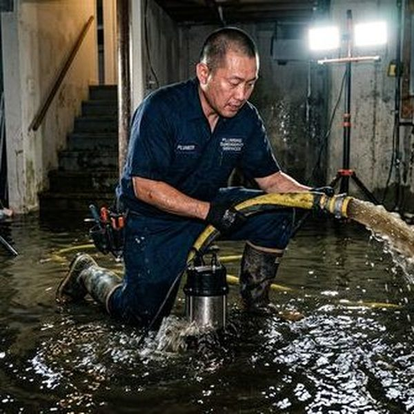

상가 건물 하수구 역류 원인 분석
상가 건물의 하수구 역류는 주로 세 가지 원인에서 발생합니다. 첫째, 지하층 배관의 역류 방지 밸브(체크밸브) 고장입니다. 호우 시 공공하수관의 수위가 올라가면 역류 방지 밸브가 없거나 고장난 건물로 하수가 역류합니다. 둘째, 그리스트랩 관리 부실입니다. 음식점이 입점한 상가에서 그리스트랩을 정기적으로 청소하지 않으면 기름때가 배관을 막아 역류가 발생합니다. 셋째, 배관 노후화로 인한 관 내부 스케일 축적입니다. 제우스시설관리는 관로탐지기와 고압세척기를 활용하여 역류 원인을 정확히 진단하고 해결합니다.

역류 발생 시 긴급 대응과 예방법
역류가 발생하면 즉시 해당 구역의 배수구를 막고 전기 콘센트 주변의 물기를 제거합니다. 지하층이라면 배수 펌프를 가동하고, 역류 오염수는 위생상 전문 업체의 소독 처리가 필요합니다. 예방을 위해서는 역류 방지 밸브 설치, 그리스트랩 월 1회 이상 청소, 분기별 고압세척 점검이 필수입니다. 제우스시설관리는 상가 건물 전문 배관 점검 서비스를 제공하며, 긴급 상황 시 28분 내 출동합니다. 정기 관리 계약 시 월 비용을 크게 절감할 수 있습니다.

자주 묻는 질문
Q. 역류 방지 밸브 설치 비용은 얼마인가요?
A. 설치 위치와 배관 구경에 따라 30~80만원 수준이며, 지하층에 설치하는 것이 가장 효과적입니다.
Q. 상가 역류 피해는 보험으로 보상받을 수 있나요?
A. 건물 화재보험의 수재 담보 특약에 가입되어 있다면 보상 가능합니다. 보험사에 역류 원인 진단서를 제출해야 합니다.